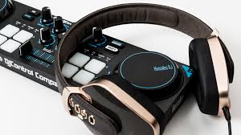

A gadget is a small tool such as a machine that has a particular function, but is often thought of as a novelty. Gadgets are sometimes referred to as gizmos.

« Previous
Next »
« Go Back to Home Page »